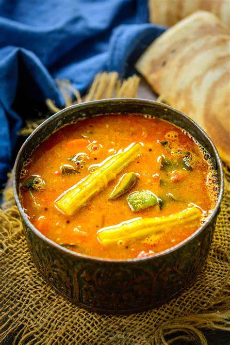

Home
Sambar

Description
Sambar is a flavorful and nutritious South Indian lentil stew made with toor dal (pigeon peas), tamarind, and a variety of vegetables such as drumsticks, carrots, and brinjal. It is seasoned with a fragrant blend of spices, including mustard seeds, curry leaves, dried red chilies, and a special sambar powder that enhances its rich and tangy taste. The dish has a perfect balance of spice, tanginess, and earthiness, making it a staple in South Indian households.
Sambar is traditionally served with rice, idli, dosa, or vada, making it a versatile accompaniment in Indian cuisine. It is not only delicious but also packed with protein, fiber, and essential nutrients. The dish has deep-rooted cultural significance and varies slightly in preparation across different South Indian states, each adding its own unique touch to the recipe.
Ingredients
- 1 cup yellow split peas (tuvar dal)
- 2 cups water
- ½ cup tamarind pulp
- ½ cup water
- 1 green bell pepper, sliced
- 1 tomato, chopped
- 1 ½ teaspoons coriander seeds
- 1 teaspoon yellow lentils (chana dal)
- 2 teaspoons vegetable oil
- 1 teaspoon mustard seed
- 1 teaspoon cumin seed
- ¼ teaspoon asafoetida powder
Steps
- Place yellow split peas in a saucepan with 2 cups water
and bring to a boil. Reduce heat to medium-low, and cook until soft, about 15 minutes.
In another saucepan, mix together the tamarind pulp stir in 1/2 cup water to make a watery juice. Bring to a boil over medium-high heat.
Add the bell pepper and tomato to the tamarind juice, and continue to boil until the vegetables are soft,
and the liquid has reduced to almost half.
- Meanwhile, grind the coriander seeds, yellow lentils, coconut and chilies to a paste using a mortar and
pestle or food processor. Add this paste to the tamarind sauce, then stir in the yellow lentils until everything is well blended.
Bring to a boil once again, then remove from the heat and set aside.
- Heat oil in a small skillet over medium heat, and add the mustard seed, cumin seed, and asafoetida powder.
Once the mustard seeds start to sputter and the mixture is fragrant, remove from heat and stir into sambar. Serve hot.
Nutrition Facts
Per serving: 306 calories; Fat 4g; Crabs 56g; Protien 15g.